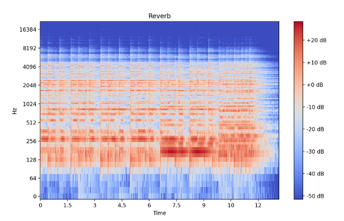
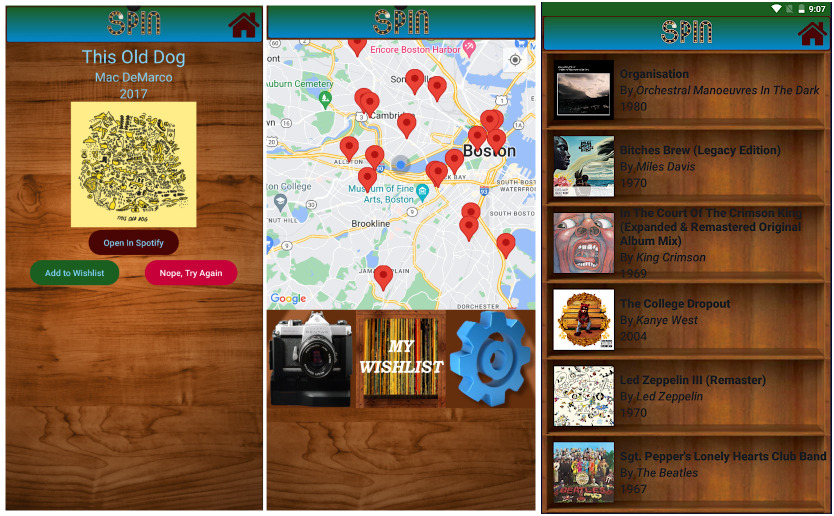
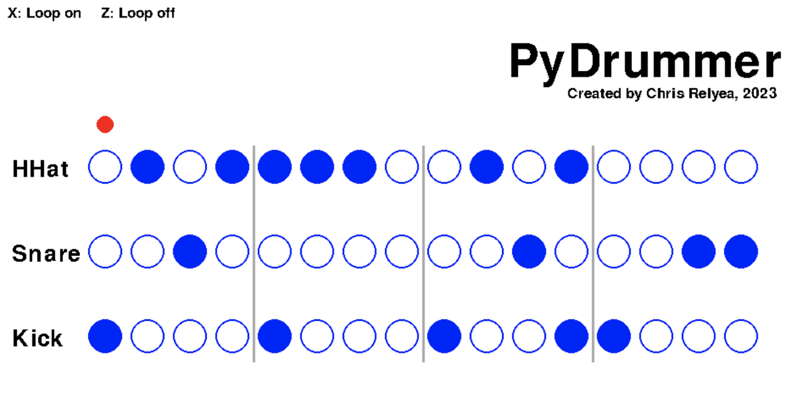

FXNet: CNN for Audio
Effects
Final project for DS 340: Intro to Machine Learning and AI at Boston University, Spring 2025. An audio ML
experiment which can label clips of various musical instruments based on
which audio effects (Distortion, Chorus, Delay, Reverb). Check out the paper
and slide deck.

MidiHero
In-development JUCE plugin that allows a Guitar Hero controller to be used as a MIDI input device. In its current
form, uses HIDAPI to detect Xbox 360 GH controller.
Allows the user control over which MIDI event is triggered by each fret button. Planned work includes revamped UI
and support for more controllers.
All-Purpose Lofi Facilitator (ALF)
JUCE VST/AU plugin for "lofi" effects, simulating physical audio formats. This was undertaken as a personal
research project and presented for admission into music technology
graduate programs. ALF allows the user to downsample/bitcrush an audio stream to create distorted, lofi signals.
The design, process, and some discussion of the lofi movement as an
aesthetic trend are presented in the companion paper.


Spin
Album cover image recognition Android app with Spotify API integration. Intended as a mobile music shopping
assistant. The user can take a picture of a physical album and will be provided
with the Spotify listing, accompished via an API chain which includes Google Cloud Vision. The Kotlin-based app
also
includes a store locator map and "my list" tool for the user's personal collection of records.
(with: Jonah Musher-Eizenman, Wai Lun Mak)
PyDrummer
Simple drum machine made with Python and the Pygame library. 16 beats, three sounds, adjustable BPM.
